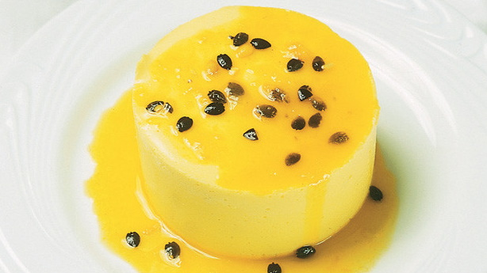

|  |
|
|
| ◄ | ► |
| Uma das duas versões, diz que foi inventado na Inglaterra, com o nome “muslum” (que era nome da mistura mel +vinho, utilizada na receita), e com as modificações do latim mudou para “mulsa”. Vários nome, vários gostos, mas uma coisa é certa: não há quem não goste do nosso musse de maracujá! |